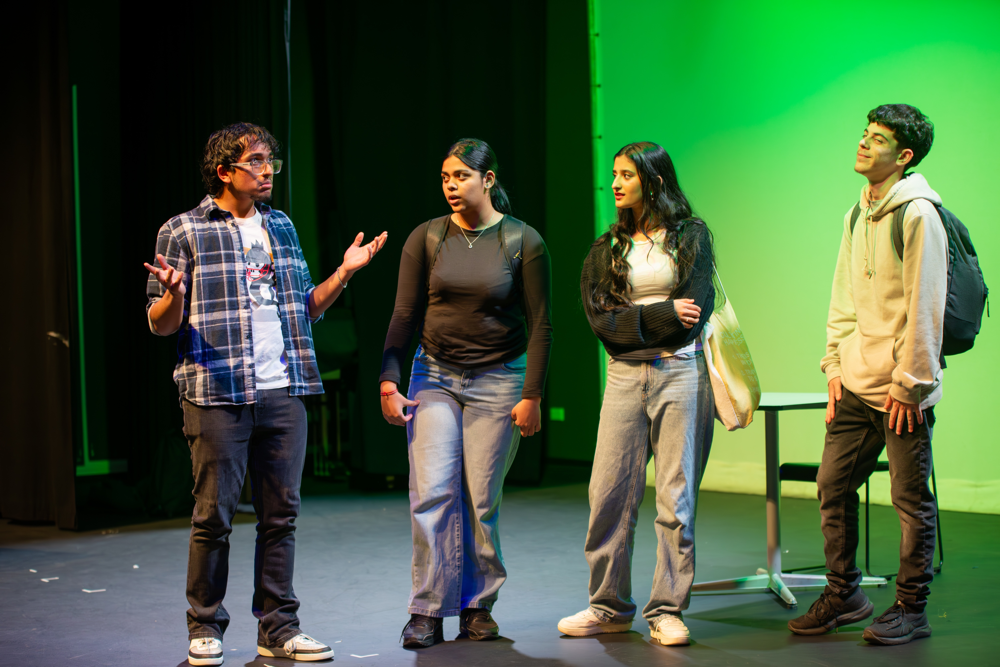
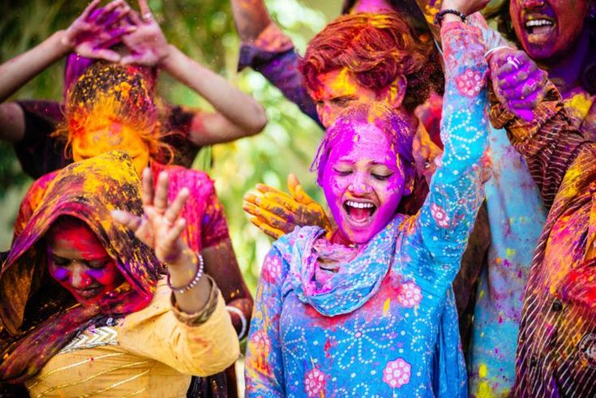
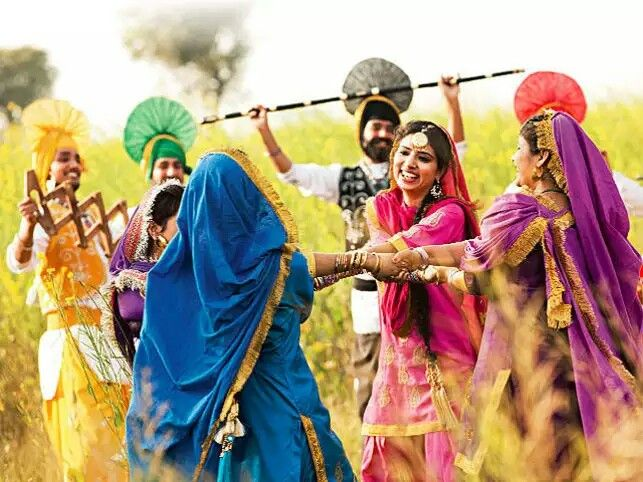
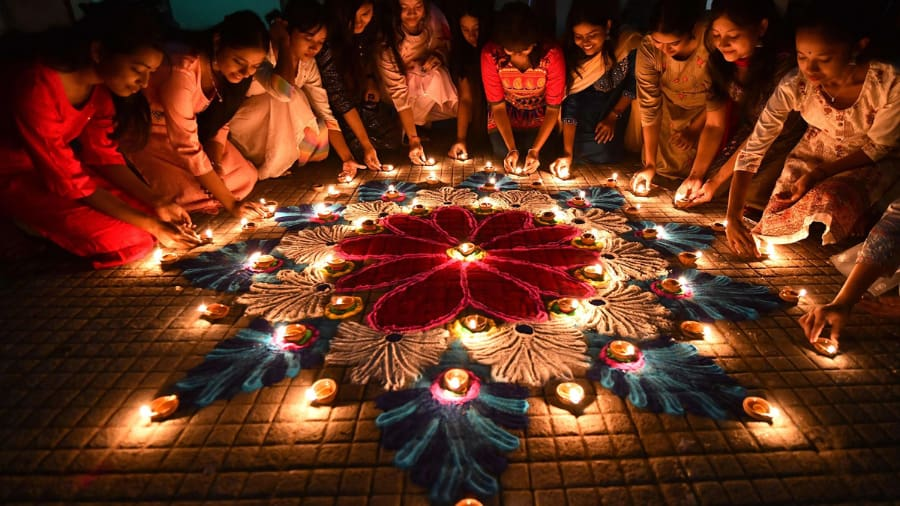
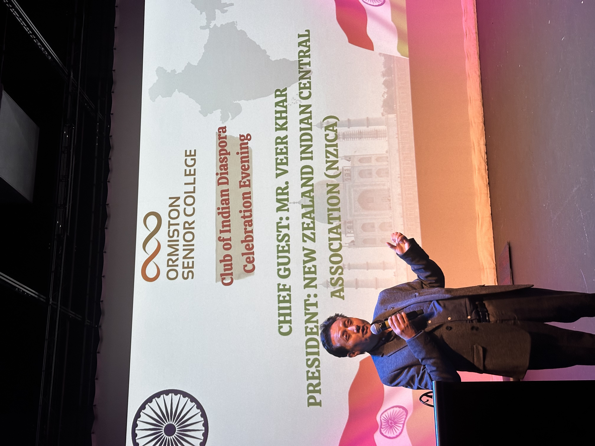

Activities & Festivals
Discover the vibrant activities and celebrations that make CID special!
What We Do
🎵 Music & Dance
Experience traditional Indian classical music, Bollywood dance, and contemporary fusion performances. Our members learn and perform at school events and cultural celebrations.

Food & Cuisine
Taste authentic Indian cuisine! We organize cooking demonstrarions and food tasting events where members learn about traditional recipes and regional Indian dishes.

Cultural Presentations
Learn about Indian history, art, literature, music, and cinema. We host presentations, film, screenings, and discussions about Indian culture and its global influence.

Festivals We Celebrate
Throughout the year, CID celebrates major Indian festivals with special events and activities.
Holi
Festival of Colours
Celebrated in March, Holi marks the arrival of spring and the victory of good over evil. We celebrate with coloured powder, music, and traditonal sweets.

Baisakhi
Harvest Festival
Celebrated in April, Baisakhi marks the Punjabi New Year and the harvest season. We celebrate with traditional Bhangra dance, music, and Punjabi cuisine

Diwali
Festival of Lights
Celebrated in October/November, Diwali is the most important festival. We celebrate with lights, decorations, fireworks display, and traditional sweets and gifts.

Indian Independence Day
August 15
We celebrate India's Independence with the national anthem, flag hosting,patriotic performances, and cultural programs to honour Inida's freedom struggle.

Indian Diaspora Week
Celebrating Global Indian Community
We celebrate the contributions of Indians around the world. This week features stories of Indian immigrants, cultural exchanges, and discussions about the global Indian community.
